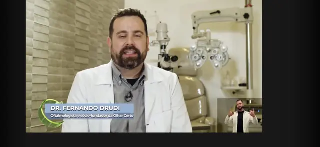
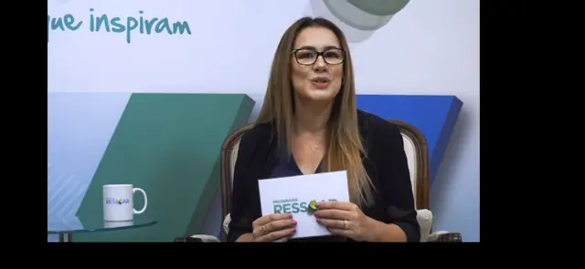

Diagnóstico avançado e tratamentos de ponta para doenças da retina: DMRI, retinopatia diabética, descolamento de retina e mais. Equipe especializada em 5 unidades em SP.
Se você apresenta algum destes sintomas, agende uma avaliação o mais rápido possível. O diagnóstico precoce é fundamental.
Oferecemos os tratamentos mais avançados disponíveis na oftalmologia moderna para doenças da retina.
Aplicação de medicamentos anti-VEGF diretamente no interior do olho para bloquear o crescimento de vasos anormais e reduzir o edema na retina. Procedimento rápido, com anestesia local (colírio), realizado em ambiente ambulatorial.
Cirurgia minimamente invasiva para remoção do vítreo e tratamento direto da retina. Realizada com microincisões e instrumentos de alta precisão, com anestesia local e sedação. Permite tratar as condições mais complexas da retina.
Aplicação de laser na retina para selar rasgos, tratar vasos anormais e prevenir o descolamento. Procedimento ambulatorial com anestesia tópica. Fundamental no controle da retinopatia diabética e na prevenção de complicações.
Tratamento que combina um medicamento fotossensível (verteporfina) com laser de baixa intensidade para destruir seletivamente vasos anormais sem danificar o tecido saudável da retina. Indicado para casos selecionados de coriorretinopatia serosa central.
Procedimento minimamente invasivo que utiliza uma bolha de gás injetada no olho para reposicionar a retina descolada. Combinado com crioterapia ou laser, permite a recuperação sem necessidade de cirurgia aberta em casos selecionados.
Contamos com equipamentos de última geração para diagnóstico preciso: OCT (Tomografia de Coerência Óptica), angiofluoresceinografia, retinografia e mapeamento de retina. Exames rápidos, não invasivos e fundamentais para o planejamento do tratamento.
Principal causa de perda de visão central em maiores de 60 anos. Afeta a mácula, responsável pela visão de detalhes. Tratamento com injeções anti-VEGF pode estabilizar e até melhorar a visão.
Complicação do diabetes que danifica os vasos sanguíneos da retina. Pode levar à cegueira se não tratada. Controle do diabetes + laser e/ou injeções intravítreas são fundamentais.
Emergência oftalmológica em que a retina se separa do tecido de suporte. Requer tratamento cirúrgico urgente (vitrectomia ou retinopexia) para preservar a visão.
Acúmulo de líquido na mácula que causa visão embaçada e distorcida. Pode ser causado por diabetes, oclusão vascular ou pós-cirurgia. Tratamento com injeções intravítreas.
Tecido cicatricial que se forma sobre a mácula, causando distorção visual. Quando compromete a visão, o tratamento é cirúrgico (vitrectomia com peeling da membrana).
Bloqueio dos vasos sanguíneos da retina, conhecido como "AVC do olho". Causa perda súbita de visão. Tratamento com injeções intravítreas e, em alguns casos, laser.
Do primeiro contato ao acompanhamento contínuo, cuidamos de cada etapa com excelência.
Entre em contato pelo WhatsApp ou telefone. Nossa equipe agenda sua consulta na unidade mais próxima com horário conveniente.
Consulta detalhada com retinólogo, incluindo exames de imagem (OCT, mapeamento de retina) para diagnóstico preciso da sua condição.
O especialista explica o diagnóstico, as opções de tratamento, riscos e benefícios. Você participa ativamente da decisão sobre o melhor caminho.
Monitoramento contínuo com exames periódicos para avaliar a resposta ao tratamento e ajustar a conduta quando necessário.
Profissionais com mais de 10 anos de experiência e presença em grandes veículos de mídia nacional.

Retina Cirúrgica e Catarata — CRM-SP 139.300
Fundador da Drudi e Almeida, especialista em retina cirúrgica com mais de uma década de experiência. Preceptor de Retina e Catarata na Residência Médica do IAMSPE. Realiza vitrectomias, injeções intravítreas e fotocoagulação a laser.
Condecorado "Amigo da Marinha" (SOAMAR Brasil) pelo projeto humanitário que leva cirurgias gratuitas a comunidades ribeirinhas da Amazônia.

Córnea e Segmento Anterior — CRM-SP 148.173 | RQE 59.216
Cofundadora da Drudi e Almeida, especialista em Córnea pela EPM/UNIFESP. Fellowship em Córnea e Doenças Externas. Referência em adaptação de lentes de contato especiais e doenças da superfície ocular.
Presença frequente em grandes veículos como Programa Você Bonita (TV Gazeta), CNN Brasil e Programa Interioriza, democratizando informação sobre saúde ocular.
"Descobri que tinha DMRI úmida e fiquei muito assustada. O Dr. Fernando explicou tudo com calma, iniciou o tratamento com injeções e minha visão se estabilizou. Profissional excepcional."
"Sou diabético há 20 anos e o Dr. Fernando acompanha minha retina há 4 anos. Graças ao acompanhamento regular e ao tratamento com laser, minha visão se mantém preservada. Equipe muito atenciosa."
"Tive um descolamento de retina e fui operado de urgência pelo Dr. Fernando. A cirurgia foi um sucesso e recuperei a visão. Sou muito grato a toda a equipe da Drudi e Almeida."



Tire suas dúvidas antes de entrar em contato. Se não encontrar o que procura, fale com nossa equipe.
A Degeneração Macular Relacionada à Idade (DMRI) é a principal causa de perda de visão central em pessoas acima de 60 anos. Afeta a mácula, região da retina responsável pela visão de detalhes (ler, reconhecer rostos, dirigir). Existem duas formas: seca (mais comum, progressão lenta) e úmida (mais agressiva, com formação de vasos anormais). O diagnóstico precoce com OCT e o tratamento com injeções anti-VEGF podem estabilizar e até melhorar a visão.
Não. O procedimento é realizado com anestesia local (colírio anestésico) e dura poucos minutos. O paciente pode sentir uma leve pressão no momento da aplicação, mas não dor. Após o procedimento, é normal sentir um leve desconforto que melhora rapidamente. A injeção intravítrea é um dos tratamentos mais seguros e eficazes para doenças da retina.
Os principais sintomas incluem: visão embaçada ou distorcida, manchas escuras ou "moscas volantes", flashes de luz (fotopsias), perda súbita de visão, sensação de "cortina" cobrindo parte do campo visual e linhas retas que parecem onduladas (metamorfopsia). Qualquer um desses sintomas requer avaliação oftalmológica urgente, especialmente a perda súbita de visão e os flashes de luz, que podem indicar descolamento de retina.
A maioria dos planos de saúde cobre consultas, exames diagnósticos (OCT, mapeamento de retina) e procedimentos como injeção intravítrea e vitrectomia quando há indicação médica. Aceitamos Bradesco Saúde, Amil, Unimed, Prevent Senior, Mediservice, Pró-PM, Ameplam e outros. A cobertura pode variar conforme o tipo de plano. Consulte pelo WhatsApp.
A vitrectomia é uma cirurgia minimamente invasiva que remove o vítreo (gel transparente que preenche o olho) para tratar doenças como descolamento de retina, buraco macular e membrana epirretiniana. É realizada com anestesia local e sedação, com microincisões que geralmente não necessitam de pontos. A recuperação varia de acordo com a complexidade: uso de colírios por algumas semanas e, em alguns casos, posicionamento específico da cabeça. A maioria dos pacientes retoma atividades leves em 1 a 2 semanas.
A retinopatia diabética pode ser controlada e estabilizada com tratamento adequado, mas o controle rigoroso do diabetes (glicemia, pressão arterial e colesterol) é fundamental. Os tratamentos incluem injeção intravítrea de anti-VEGF, fotocoagulação a laser e, em casos avançados, vitrectomia. O acompanhamento regular com retinólogo — pelo menos uma vez ao ano para diabéticos — é essencial para detectar alterações precocemente e preservar a visão.
Ainda tem dúvidas? Nossa equipe responde em até 2 horas.
Perguntar pelo WhatsAppAgende sua avaliação com nosso especialista em retina. Diagnóstico avançado, tratamentos de ponta e acompanhamento contínuo em 5 unidades em SP.
Agendar Avaliação pelo WhatsAppSem compromisso · Resposta em até 2h · Atendimento humanizado